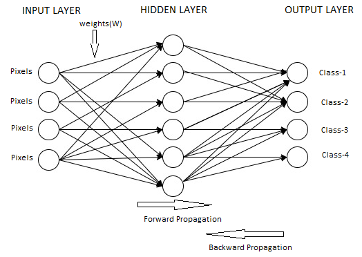

Neural Networks:
Neural network uses artificial neurons which are interconnected to different layers which recognize the patterns by calculating the error from the training data which results in better learning rate for the model.
The least squared error function is used to train the data to reduce the error based on the weights on each node for the neural network.

Input layer: It is input for the model where it learns from the given input data. Each input network is given a weight along with the inputs. The inputs are 50X50 pixels and weights are randomly initialized with matrix size input neurons by number of Hidden neurons.
Hidden layer: These units are in between input and output layers, it’s job is to transform the input features by using the Error functions or weighted functions that are used by the Output layer.
Output layer: This unit obtains the result from the model and how it has learned from the given structure. For this project the total output neurons are 10 as we must classify the data into 10 categories.
For this project we have implemented 3-layer neural network with one input layer, 1 hidden layer with 50 nodes and 1 output layer with 10 nodes. In Feed forward propagation each image is trained by taking pixels and calculating the dot product of weights. For forward propagation we have used Sigmoid activation function to predict the output using the random weights in initial phase. We have used Tanh sigmoid function.
a1=xW1+b1
z1=sigmoid(a1)
The activation functions are applied to the intermediate output z1. The weights W1 and W2 transform the data in between the layers. The output predicted form the forward propagation is calculated using the hidden layer weight and the output generated by the hidden layer.
a2=z1W2+b2
y(pred)=Softmax(a2)
Backward Propagation: For backward propagation each output predicted is compared to the training label and the error is calculated and is used in gradient descent algorithm to improve the model. The loss is used to learn the weights of the model.
Backward Propagation Formulas
loss=y(pred)-y
δ2=(1-〖tanhz1〗^2 ).(W1.loss)
The weights are updated by using the formulas:
W1=W1-δW1*Learning Rate
W2=W2-δW2*Learning Rate
The weights obtained with default learning rate of 0.01 and these weights form the model for our test dataset which are predicted with forward propagation.